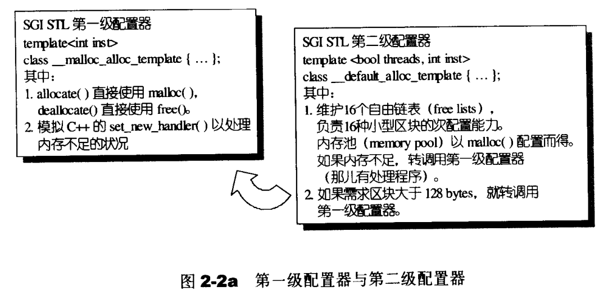
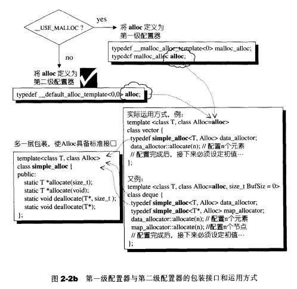
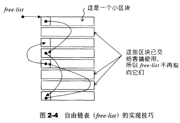
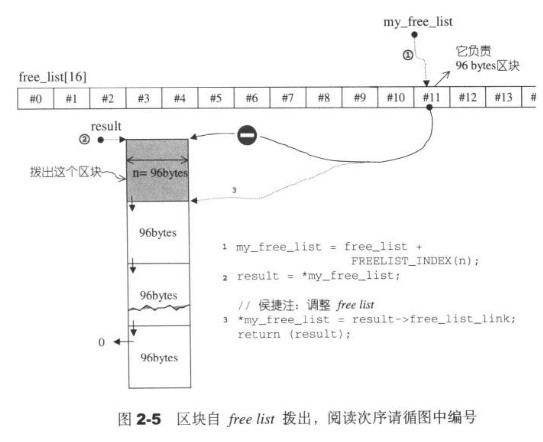
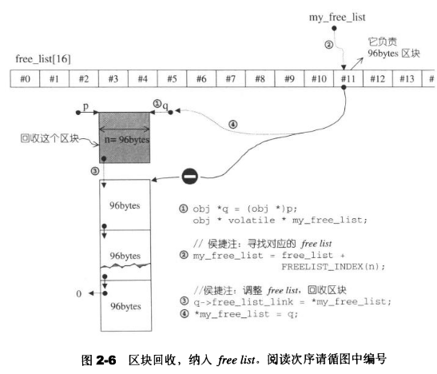
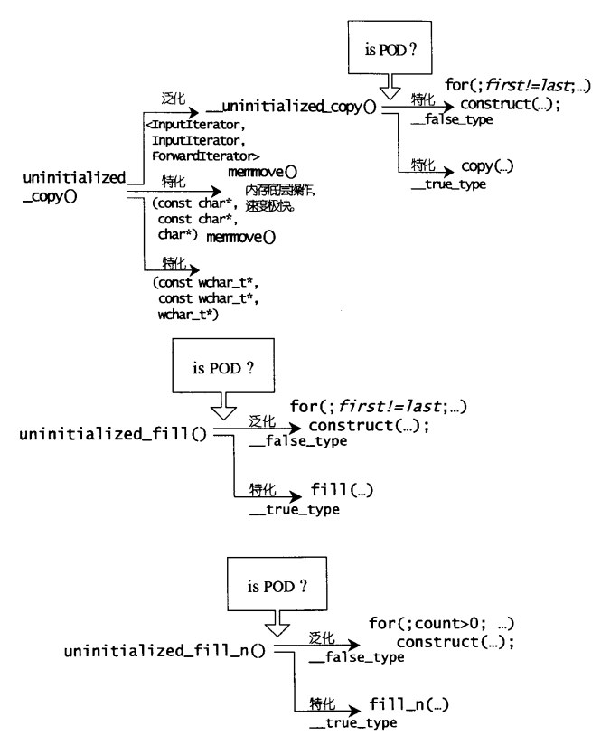

可能困惑的C++语法
临时对象的产生和运用
所谓临时对象，是一种无名对象，例如任何pass by value操作都会引发copy操作，形成一个临时对象。
临时对象往往造成效率的负担，但有时刻意制造是程序干净清爽的表现。例如Shape(3,5), int(8)，其意义相当于调用相应的constructor且不指定对象名称。STL最常将该技巧用于仿函数functor与算法的搭配上。
template <typename T>
class print
{
public:
void operator() (const T& elem)
{ cout << elem << " ";}
};
int main(){
int ia[6] = {0,1,2,3,4,5};
vector<int> iv(ia, ia+6);
for_each(iv.begin(), iv.end(), print<int>());
}最后一行print<int>()是一个临时对象，该对象被传入到for_each之中起作用，当for_each结束，这个临时对象也结束了生命。
静态常量整数成员在class内部直接初始化
若class内含const static intrgral data member，在class内部直接取初值。
template<typename T>
class testClass {
public:
static const int _datai = 5;
static const long _datal = 3L;
static const char _datac = 'c';
};
int main(){
cout << testClass<int>::_datai << endl;
}increment/decrement/dereference操作符
increment/dereference操作符在迭代器的实现，任何迭代器都需要实现前进(increment,operator++)和取值(dereference,operator*)功能。前者分为前置式(prefix)和后置式(postfix)两种。
class INT{
friend ostream& operator <<(ostream& os, const INT& i);
public:
INT(int i) : m_i(i) { };
// 前置式 prefix
INT& operator++(){
++ (this->m_i);
return *this;
}
// 后置式 postfix
const INT operator++(int)
{
INT temp = *this;
++(*this);
return temp;
}
// dereference
int& operator*() const
{
return (int&) m_i;
}
private:
int m_i;
};
ostream& operator<< (ostream& os, const INT& i){
os << "[" << i.m_i <<"]";
return os;
}
int main(){
int I(5);
cout << I++;
cout << *I;
}前闭后开区间表示法[)
一般的，迭代器表示的实际范围从first开始，直到last-1。这种表示法带来许多方便，例如迭代器遍历
template <class InputIterator, class Function>
Function for_each(InputIterator first, InputIterator last, Function f){
for ( ; first != last; ++first)
f(*first);
return f;
}operator()操作符
STL算法，有时需要用户指定某个条件或某个策略，代表这个策略的往往是函数。在C语言中，将函数作为参数传递，是通过函数指针。
int fcmp(const void* elem1, const void* elem2){
const int* i1 = (const int*)elem1;
const int* i2 = (const int*)elem2;
if (*i1 < *i2)
return -1;
else if(*i1 == *i2)
return 0;
else if(*i1 > *i2)
return 1;
}
int main(){
int ia[5] = {32, 92, 67, 58, 10};
qsort(ia, sizeof(ia)/sizeof(int), sizeof(int), fcmp);
}STL用仿函数实现以上策略，简而言之，对某个class重载operator()，它就成了一个仿函数。
template <class T>
struct plus{
T operator() (const T& x, const T& y) const
{ return x + y; }
};
int main(){
plus<int> plusobj;
cout << plusobj(3,5)<<endl; // 使用仿函数
cout<<plus<int>()(43,50) <<endl; // 使用产生防函数的临时对象
}空间配置器
空间配置的一些接口
// default constructor
allocator::allocator()
// copy constructor
allocator::allocator(const allocator&)
// 泛化的copy constructor
template <class U>
allocator::allocator(const allocator<U>&)
// default destructor
allocator::~allocator()
// 配置空间，足以存储n个T对象。
pointer allocator::allocate(size_type n, const void* = 0)
// 归还先前配置的空间
void allocator::deallocate(pointer p, size_type n)
// 构造对象，等同于new ((const void*) p) T(x)
void allocator::construct(pointer p, const T& x)
// 销毁对象，等同于p->~T()
void allocator::destroy(pointer p)一般习惯的C++内存配置操作和释放操作如下
class Foo {...};
Foo* pf = new Foo;
delete pf;其中new包含两阶段操作，(1)调用operator new配置内存; (2)调用Foo:Foo()构造对象内容。对应的delete,(1) 调用Foo:~Foo()将对象析构 (2)调用operator delete释放内存。STL allocator将这两阶段操作分开，内存配置由alloc::allocate()负责，内存释放由alloc::deallocate()负责。对象构造由construct()负责，对象析构由destroy()负责。
考虑到C++并非每个对象都会调用析构函数，如果对象存在trivial destructor一种默认的析构函数，这时不应该调用析构函数（例如int类型)。这时就要判断对象类型，也就是利用value_type成员获得迭代器所指对象的类型，再利用__type_traits<T>判断是否为trivial类型。
空间配置和释放 std::alloc
考虑到小型区块可能造成的内存碎片问题，STL使用双层级配置器，第一级配置器直接使用malloc和free，第二级配置器通过维护16个链表负责小型区块的空间，减少内存碎片。注意当需求区块大于128bytes，转调用第一级配置器。
SGI还需要对alloc再包装一个接口，使配置其能够符合STL规格
template<class T, class Alloc>
class simple_alloc {
public:
static T* allocate(size_t n){
return 0 == n?0 : (T*) Alloc::allocate(n * sizeof(T));
}
static T* allocate(){
return (T*) Alloc::allocate(sizeof (T));
}
...
}
#ifdef __USE_MALLOC
typedef __malloc__alloc_template<0> malloc_alloc;
typedef malloc_alloc alloc; // 令alloc为第一级配置器
#else
// 令alloc为第二级配置器
typedef __default_alloc_template<__NODE_ALLOCATOR_THREADS,0> alloc;
#endif
具体调用方式如下图所示

一级配置器剖析
第一级配置器以malloc,free,relloc等C函数执行实际的内存配置，释放，重配置操作，并实现出类似C++ new handler的机制。所谓C++ new handler,指当 operator new 不能满足一个内存分配请求时，它在抛出一个 exception（std::bad_alloc异常）之前，会先去调用用户指定的函数：error-handling function（错误处理函数）。
STL的第一级配置器的alllocate和realloc在调用对应的malloc和realloc不成功后，改调用oom_malloc和oom_realloc。后两者会循环调用用户定义的handler，倘若用户未定义handler，后两者会直接调用__THROW_BAD_ALLOC丢出bad_alloc异常信息，或利用exit(1)中止程序。
二级配置器
第二级配置器，如果区块超过128bytes,移交第一级配置器处理，小于128bytes,则以内存池memory pool管理。
momory pool会配置一大块内存，但用自由链表free-lists来进行用户内存的配置和回收。共有16个free-lists（也就是16个链表），每个list管理大小为8,16,24,32,40,48,56,64,72,80,88,96,104,112,120,128的小额区块。下面是一个内存配置例子
假设一开始，用户调用chunk_alloc(32,20)请求20个32bytes的区块，这时malloc配置40个32bytes的区块，其中第1个交出，19个交给free_list[3](也就是维护32bytes区块的链表)维护，剩余20个给内存池。
如果接下来调用chunk_alloc(64,20)，但free_list[7]是空的，内存池只够供应32*20/64=10个64bytes的区块，这时只能把这10个区块，内存池全空。之后再来请求需重新调用malloc分配内存。
free_lists链表使用union共用体维护的
union obj{
union obj* free_list_link;
char client data[1];
}以上，union obj*共用体指针和char*数组指针共用同一块空间，当区块未分配内存时，union obj* free_list_link起作用，指向其他某一个未分配的free_list，当区块分配内存时，char client data[1]起作用，成为指向这一块区块的指针。
使用共用体前提是两个成分是互斥的，同一时刻要么使用union obj* free_list_link指向下一个块，要么使用char client data[1];表示当前块的内容，不可能同时使用。

空间配置函数allocate()
空间配置allocate()本质是对链表的操作
static void* allocate(size_t n){
obj* volatile *my_free_list;
obj* result;
// 大于128调用第一级配置器
if (n > (size_t) __MAX_BYTES){
return (malloc_alloc::allocate(n));
}
// 寻找16个free_lists中适当的区块list
my_free_list = free_list + FREELIST_INDEX(n);
result = *my_free_list; // 头节点就是要分配内存的结点
if (result == 0){
// 没找到可用的free_list, 准备填充free_list
void *r - refill(ROUND_UP(n));
return r;
}
*my_free_list = result -> free_list_link; // 更改链表头节点，从而指向要分配的节点
return (result);
}
空间释放函数 deallocate()
空间释放函数与allocate()类是，本质也是对链表的操作
static void deallocate(void *p, size_t n){
obj *q = (obj* )p; // obj是维护链表的union
obj* volatile * my_free_list;
// 大于128就调用第一级配置器
if (n > (size_t) __MAX_BYTES){
malloc_alloc::deallocate(p, n));
return ;
}
// 寻找16个free_lists中适当的区块list
my_free_list = free_list + FREELIST_INDEX(n);
// 将p添加到free_lists,回收区块
q -> free_list_link = *my_free_list;
*my_free_list = q; // q变成了头节点
}
当free_list没去可用区块时，调用refill为free_list重新填充空间，新的空间取自内存池由chunk_alloc完成，默认获得20的新区块（链表节点）。这也是一个链表操作，用(obj*)chunk+n)获得第n个chunk返回的块，用来创建链表节点，然后将free_list各节点串联起来。
chunk_alloc默认调出20个区块返回给free_list。如果内存池不足20个区块但多于1个，则返回这不足20个区块的空间，如果连一个都不能供应，则利用malloc从heap中配置内存。若malloc也失败，则四处找其他足够大之free_list，找到就挖一块交出，找不到就调用第一级配置器。第一级同样用malloc配置内存，但是有类似new-handler的OOM处理机制。
内存基本处理工具、
STL定义有五个全局函数，作用于未初始化空间上，前两个函数是construct和destroy，后三个函数是uninitialized_copy,uninitialized_fill和uninitiailized_fill_n，分别对应高层次的STL函数copy,fill,fill_n。
uninitialized_copy
template <class InputIterator, class ForwardIterator> ForwardIterator uninitialized_copy( InputIterator first, InputIterator last, ForwardIterator result )若目的地
[result,result+(last-first)]范围内的每一个迭代器都指向未初始化区域，则uninitialized_copy会使用copy constructor,对输入来源[first,last)范围内的每一个对象产生一份复制品，送入到输出范围中，也就是针对输入范围内的每一个迭代器i,该函数会调用construct(result + (i-first), *i)产生*i的复制品放置于输出的相应位置上。uninitialized_fill
template <class InputIterator, class T> ForwardIterator uninitialized_fill( InputIterator first, InputIterator last, const T& x )如果
[first,last)范围内的每个迭代器都指向未初始化的内存，uninitialized_fill会在该范围内产生对象x的复制品。uninitialized_fill_n
template <class InputIterator, class Size, class T> ForwardIterator uninitialized_fill_n( InputIterator first, Size n, const T& x )和
uninitialized_fill相比，范围变成[first,first+n)
注意以上复制行为，会先萃取出value_type，判断该类型是否为POD类型。POD也就是Plain Old Data，标量型别或传统的C struct型别，针对POD型别可以采用最有效率的复制手法，而对non-POD型别采用保险安全的做法。
